Snapshot / KINTO
KINTO 2023.7-2023.12 Art Direction / Design
ここに掲載しているものは全て一人で担当しています。
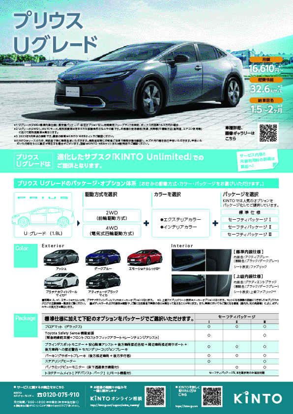
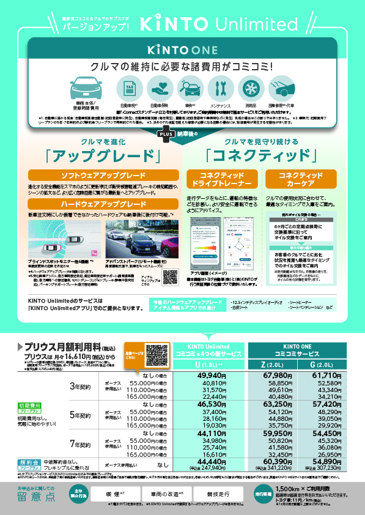
プリウスUグレードDH
Direction / Design
資料請求してくださったお客様や、各販売店においてもらうフライヤー。文字が多いのでフォントはコンデンス体を採用し、少しでも読みやすくなるよう工夫した。
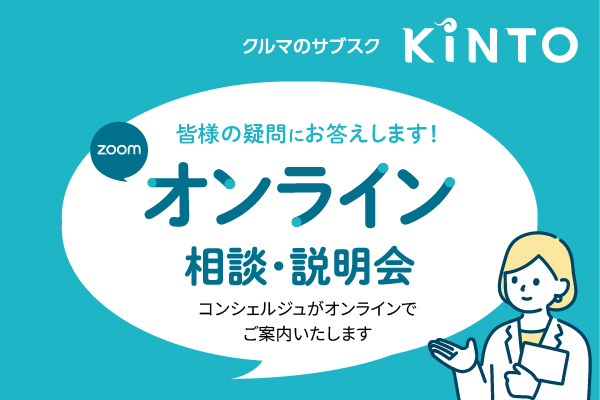
KINTO公式サイト用ポップアップ
Direction / Design / Writing
成約に繋げるためにオンライン相談会をプッシュする施策。公式サイト右下に表示するポップアップを作成。
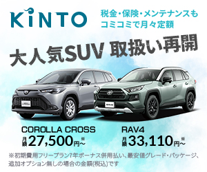
トヨタ自動車労働組合用バナー
Direction / Design / Writing
若年男性向けに作成
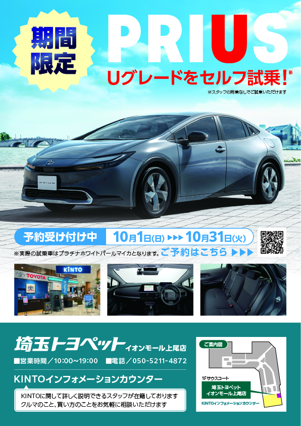
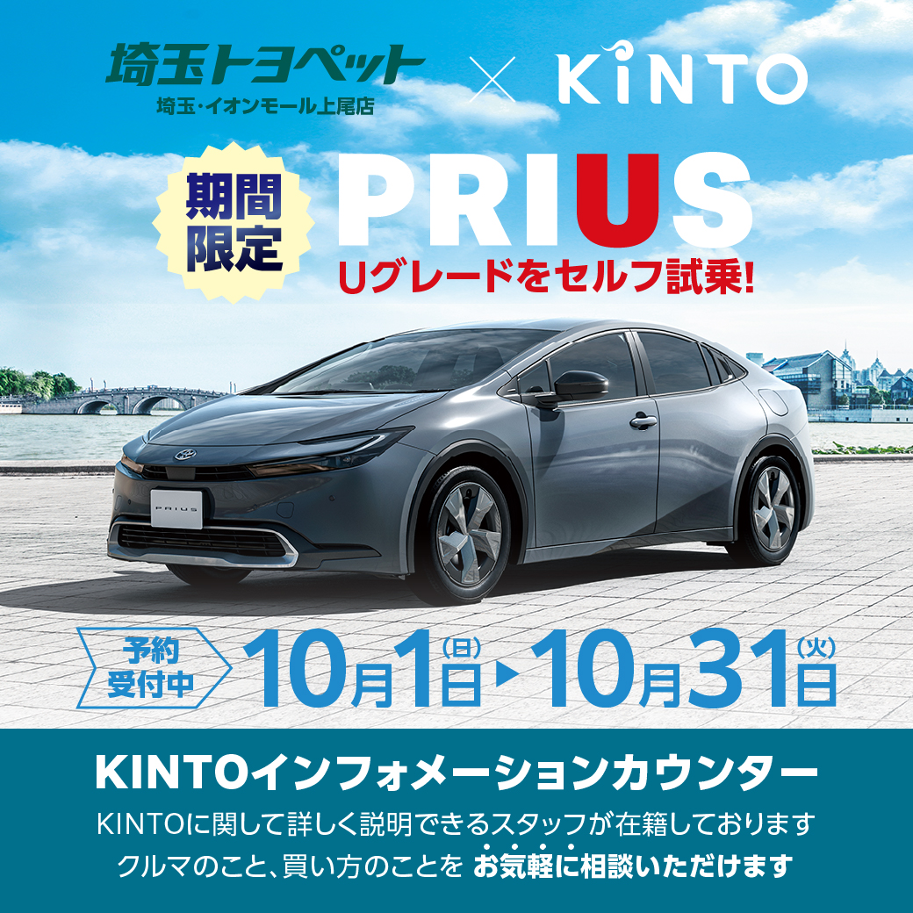
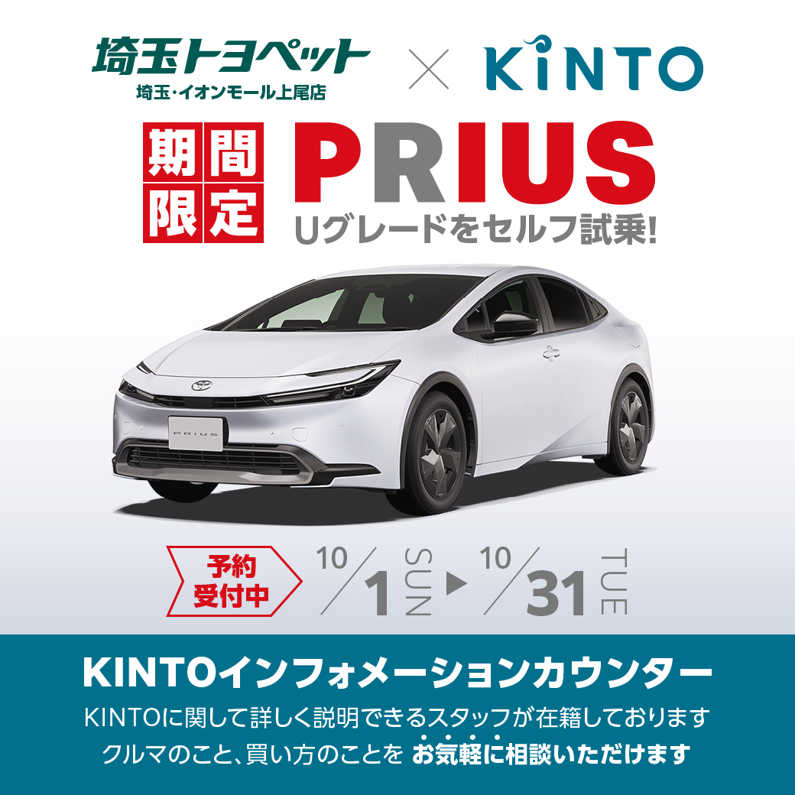
埼玉トヨペット様 / プリウスUグレード試乗DH・LINE配信用バナー
Direction / Design / Writing
資料請求してくださったお客様や、各販売店においてもらうフライヤー。文字が多いのでフォントはコンデンス体を採用し、少しでも読みやすくなるよう工夫した。

福利厚生サイト ベネフィットステーション向けバナー
Direction / Design / Writing
沢山の商材がある中で目立つ必要があったため、インパクトを重視しストレートに価格訴求
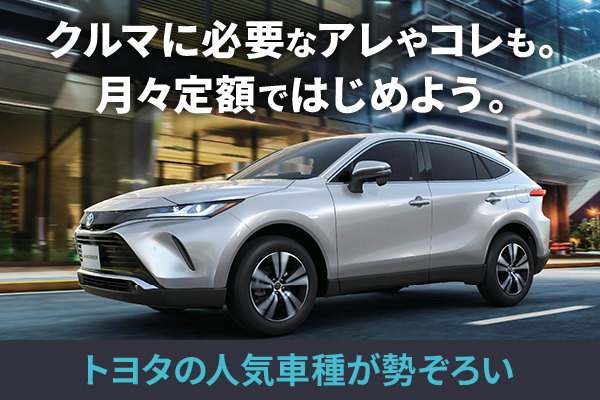
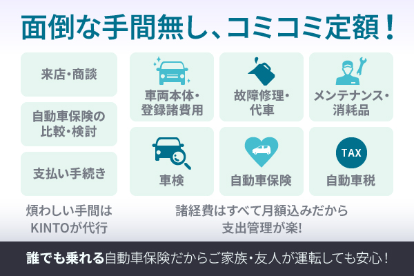
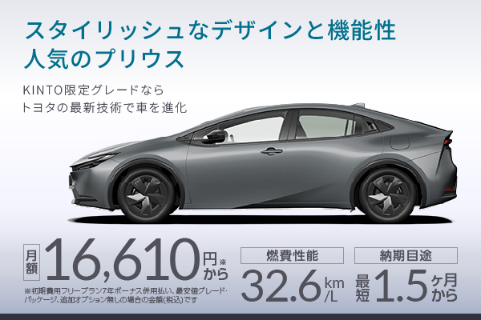
セゾンカード会員サイト用 3連カルーセルバナー
Direction / Design / Writing
男性向けに、販売台数の多いプリウスとカローラクロスをPR
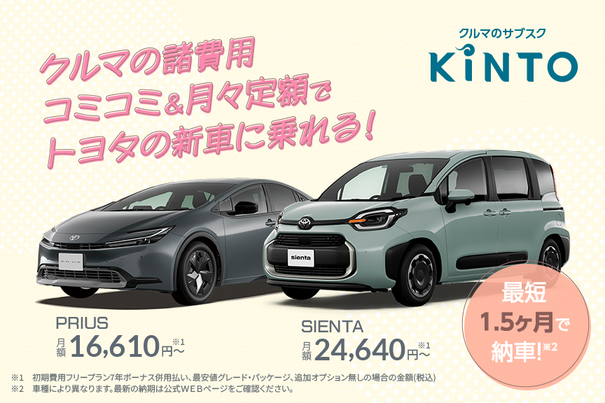
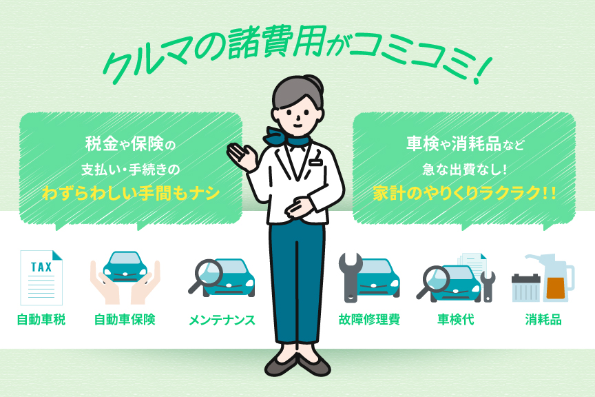
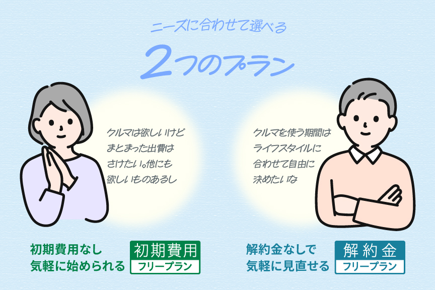
エポスカード会員サイト用 3連カルーセルバナー
Direction / Design / Writing
女性顧客の多いエポスカードでの認知獲得のため、専用サイトに遷移するバナーを作成
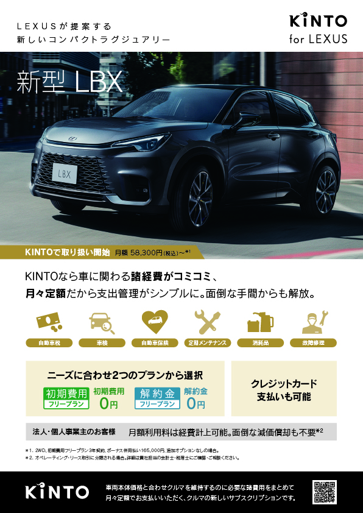
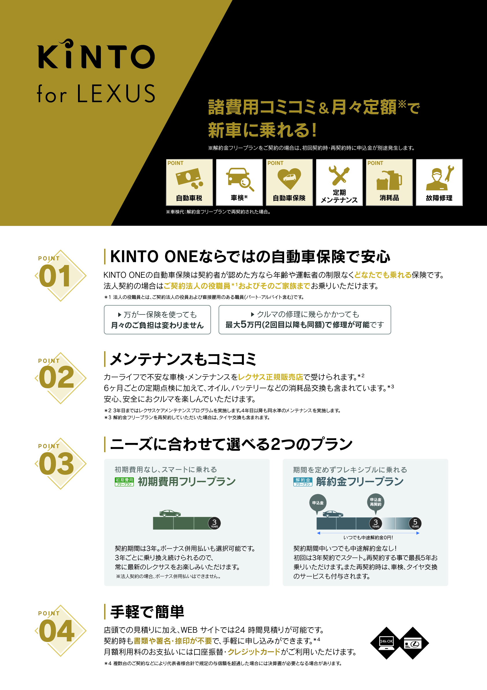
LEXUS販売店用 DH / A1パネル
Direction / Design / Writing
レクサス販売店用に通常のKINTOとは異なるブランディングのトンマナで作成。フォントもレクサスフォントを使用しKINTOであってもレクサスとの統一感を出すようにした。他にもDMなどツール一式作成。